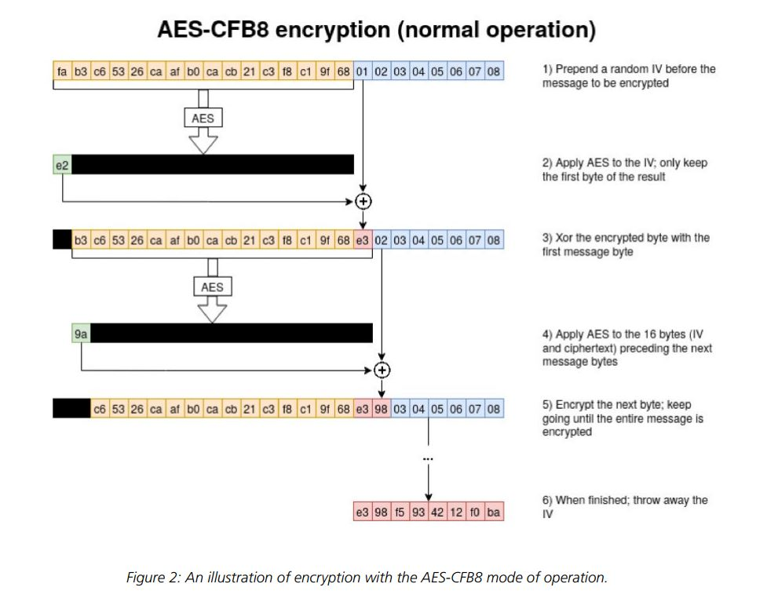

{kind=link}
{kind=link}

title: CVE-2020-1472漏洞分析
author: ki9mu
avatar: https://cdn.jsdelivr.net/gh/ki9mu/cdn@1.2/img/avatar/avatar.jpg
authorLink: ki9mu.github.io
categories: 技术
date: 2020-09-15 20:51:01
comments: true
tags:
对用户进行认证时，服务器安全地将用户凭据传递到域控制器（DC）在域的用户帐户的。（除客户端计算机外，DC是唯一知道用户密钥；即用户密码的实体。）将登录请求传递给DC，且DC成功验证凭据后，DC会回退服务器可以在授权决策中使用的用户帐户的那些属性（例如，授予用户对特定文件的访问权限）。
Netlogon远程协议的责任是通过从服务器（充当安全通道客户端）到DC（充当安全通道服务器）建立的安全通道将登录请求传递到DC 。通过使用由服务器和DC共享的秘密密钥（称为服务器的机器帐户密码）计算出的会话密钥对通信流量进行加密来实现安全通道。
当成功验证DC上的用户凭据后，Netlogon远程协议通过安全通道将用户授权属性（称为用户验证信息）传递回服务器。
AES-CFB8实际加密流程：黄色部分为iv，蓝色部分为明文，也就是我们可控制的输入。

CVE-2020-1472是一个windows域控中严重的远程权限提升漏洞，是因为微软在Netlogon协议中没有正确使用加密算法而导致的漏洞。由于微软在Netlogon协议中没有正确使用加密算法而导致的漏洞，由于微软在进行AES加密运算过程中，使用了AES-CFB8模式并且错误的将IV设置为全零，这使得攻击者在明文(client chanllenge)、IV等要素可控的情况下，存在较高概率使得产生的密文为全零。
Netlogon协议身份认证采用了挑战-响应机制，其中加密算法是AES-CFB8，并且IV默认全零，导致了该漏洞产生。又因为认证次数没做限制，签名功能客户端默认可选，使得漏洞顺利被利用。
由于引入了Active Directory，所以无法用来提取凭证。但可以使用NetrServerPasswordGet，它可以获取计算机密码的NTLM哈希，这个散列是用会话密钥加密的。
能够利用的是使用NetrServerPasswordSet2，这是用来设置一个新的计算机密码。
*匹配NetrServerAuthenticate3 request包
*匹配flag值为0x212fffff,当flag设置该值时，禁用掉session
*基于以上两点对请求次数判断，阈值暂时设置为60秒请求20次
alert tcp any any -> any any (msg:"检测到zerologon攻击"; flow:to_server,established; content:"|05 00 00 03 10 00 00 00|";distance:32;content:"|5C 00 5C 00|"; content:"|00 00 00 00 00 00 00 00 bf bf ff ff 2f 21|"; threshold:type both, track by_src, count 20, seconds 60;reference:url, https://www.secura.com/pathtoimg.php?id=2055; sid:10011222;rev:1;)吐槽：本以为能白嫖规则：https://github.com/bhdresh/SnortRules/blob/6c67ca56ff35cc972181266dc6c356b695e01aac/Exploit/CVE-2020-1472.rules ，测试后发现这玩意乱写的，request包才能匹配|05 00 00 03 10 00 00 00|，但request包的flag值在最后设置为|bf bf ff ff 2f 21|，无法命中后面内容。阿西吧。